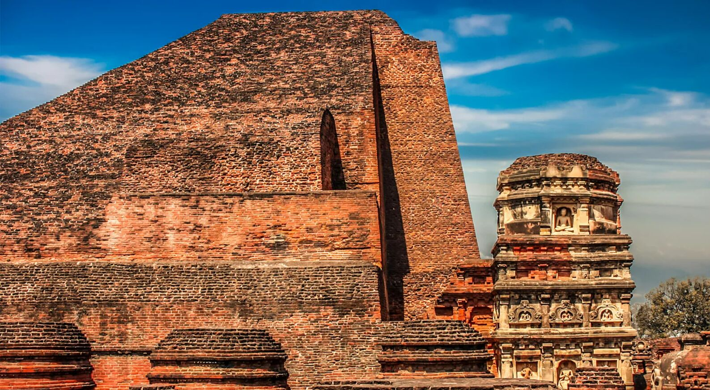
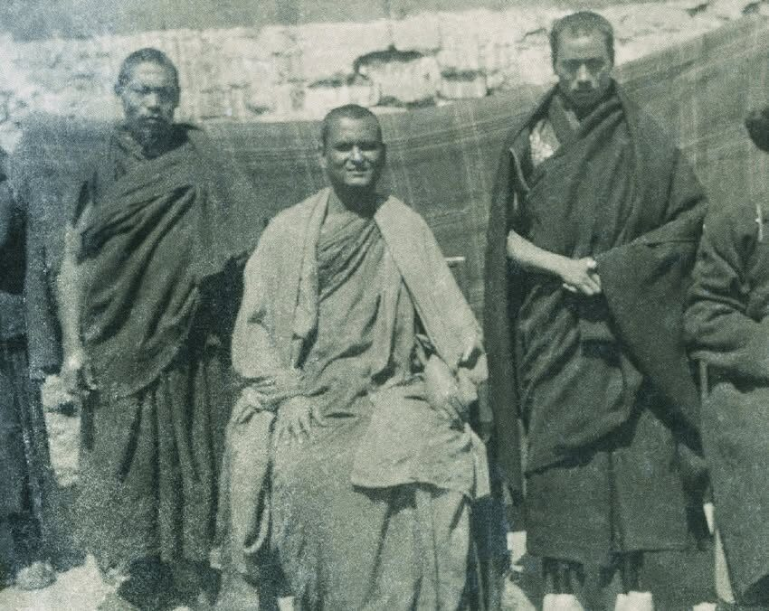
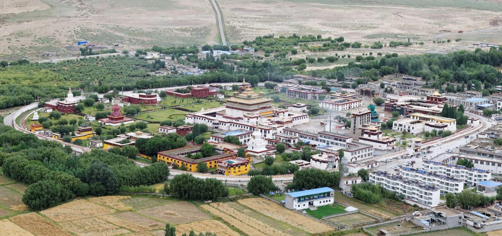

A Brief Overview of India-Tibet Cultural Relations and its Legacies
Jampa Samten.

India-Tibet Cultural Relations and its Legacies
Jampa Samten
The Tibetan Plateau served as a Natural Defensive Wall for the National Security of Asian countries that did not share borders with China before 1959. China shared land borders with 6 countries before 1959; India was not among these six countries. This Natural Defensive wall collapsed in 1959 with the forceful occupation of Tibet by Communist China. China, now shares borders with 14 countries, and India is among these 14 countries
Tibetan Plateau is the most glaciated region on Earth. Water runoff from these regions feeds the largest rivers of Asia. Closed to 47% of the world population depends on the watershed originating from the Tibetan Plateau. Tibet's strategical, ecological, and environmental significance to the Asian regions is therefore immense.
Tibet also served as the repository of ancient Indian knowledge or wisdom, particularly the Buddhist teachings and practices. Pandit Rahul Sankrityayan travelled to Tibet four times in between the period 1934 and 1938 in search of ancient Indian knowledge and wisdom that had been preserved there. The Indian population remains largely unaware of how this ancient knowledge and wisdom reached Tibet, and how it has been preserved and cherished by the Tibetan people for over a 1,000 years. This article aims to present a brief overview of India-Tibet cultural relations and its legacies.
Pandit Rahul Sankrityayan (seated) during his second expedition to Tibet in 1934.

According to traditional Tibetan historical texts, Tibet's first cultural contact occurred with the India sometimes in the 4th century CE, during the reign of the Tibetan king Lha Thothori Nyentsan. Buddhism was introduced to the Tibetan king by an Indian scholar named Legjin, assisted by a Khotanese monk and Tokharian translator. The introduction of medical system in Tibet is also attributed to an Indian doctor couple, during the reign of the Tibetan king Lha Thothori Nyentsan.
In 7th century, King Songtsan Gampo (r. 617-650 CE) embraced Buddhism most likely due to the influence of his two consorts: a Nepalese princess named Bhrikuti Devi, and a Chinese princess named Wencheng Konjo. The Nepalese princess arrived at the Tibetan Court sometimes around 638 CE, and the Chinese princess in 641 CE. The Chinese consort brought with her an image of Sakyamuni Buddha, which was installed in the Ramoche temple built by her in Lhasa. The Nepalese consort likewise brought a Sakyamuni Buddha image, which was installed in the temple of Rasa Trulnang built by her in Lhasa.
Indian Influence on Tibetan Script and Language
One of the most ambitious and significant task facing King Songtsan was the translation of vast body of Buddhist literature from Indian languages into Tibetan. Until that point, Tibetan language was transmitted orally, as the language had no written script. It became clear that a written Tibetan script with a systematic grammar was essential to accomplishing this goal. The King has two options: to devise the Tibetan script and grammatical system on either the Indian model or the Chinese model. The King chose the Indian model, as the Indian alphabetic script and its systematic grammatical framework were far better suited to translating Indian Buddhist scriptures into Tibetan.
The King despatched a group of 16 young Tibetans to India to study Indian languages and scripts—Thonmi Sambhota was one of them. He was the first Tibetan to reach India and studied Indian languages, scripts, and grammatical texts under various scholars. Based on Indian alphabets and Brahmi script of the Gupta period, Thonmi devised the Tibetan alphabet, scripts, and grammatical system that remain in use to this day. The Tibetan alphabet consists of 30 basic consonants, including the vowel a, and four vowel-signs – for i, u, e, and o – modelled on the Indian system. He was also the first Tibetan to translate Buddhist scriptures from an Indian language into Tibetan.
No account of the history and development of Buddhism in Tibet would be complete without mention of Śāntarakṣita, Padmasambhava, and Kamalaśīla—all of whom travelled to Tibet during the reign of King Trisong Detsan (r.742-798 CE). Śāntarakṣita's most enduring contribution was the establishment of the Buddhist Samgha—monastic community—in Tibet for the first time. In 767 CE, Śāntarakṣita, assisted by 12 bhikkhus invited from India, ordained the first seven Tibetans into the Sarvāstivādin tradition of Vinaya (monastic discipline) and admitted them into the monastic order. He is remembered, honoured, and venerated to this day as the first upādhyāya (khenpo) of Tibetan Samgha. Through his tireless, life-long devotion and the Royal patronage of King Trisong Detsan, the teachings and practice of Vinaya spread widely across Tibet. On Śāntarakṣita's recommendation, the King also invited Padmasambhava, one of the greatest tantric masters known in India.
During the same period, the Chinese teacher, Mo-ho-yen was imparting instruction in deep meditation remaining in a state of 'absolute inaction and thoughtlessness'. His teachings diverged, both in theory and in practice, from those of Indian traditions, discouraging the study of the religious and philosophical scriptures. Sharp disputes arose between the followers of Chinese Spontaneist (cig char ba) tradition and the Indian Gradualist (rim gyis pa) tradition. An Indian philosopher, Kamalaśīla—a disciple of Śāntarakṣita—was brought from India to debate with the Chinese teacher. The Chinese master was defeated, and returned to his homeland. The King thereupon proclaimed that all Tibetan should henceforth follow the Madhyamika doctrines of the great Indian teachers, such as Nāgārjuna, .and conduct themselves in accordance with the 10 religious practices and the 6 paramitas. Kamalaśīla composed Bhāvanākrama (Stages of meditation), thereby consolidating and stabilising the foundation of Buddhism laid by Śāntarakṣita and Padmasambhava.
Tibet's First Monastic Institution and Indian Influences on Tibetan Culture.
Tibet's first monastic institution, Samye Mahāvihāra, was built under the patronage of the King Trisong Detsan. Acharya Śāntarakṣita modelled its construction on Odantapuri Mahāvihāra, the ruins of which are believed to lie in and around modern city of Bihar Sharif in the Nālandā district of Bihar. The Ajanta Cave Vihāras offer vivid evidence that Tibetan monastic architecture is closely reminiscent of the Indian model of Buddhist Vihāras. The Sayanasanavastu chapter of Vinayavastu—one of the foundational texts on monastic discipline—prescribes the drawing of bhāvacakra on the front verandah wall outside the main entrance. The painting of bhāvacakra on the front verandah wall, outside the main entrance, is a common feature of Tibetan monasteries. The bhāvacakra is clearly visible on the front verandah wall of Ajanta Vihāra Cave no. 17, to the left of its main entrance, though unfortunately, a large portion of the painting has been lost.
Samye Mahāvihāra in Tibet.

Of the three Catalogues of Indian Classical Texts translated into Tibetan—compiled in the 9th century—two survived: the Dankar Palace Catalogue, listing 736 titles and the Phangthang Palace Catalogue, listing 959 titles. The continuous flow of Indian cultural heritage had, by the 9th century substantially enriched and transformed Tibetan civilisation, which had absorbed new ideas and adapted them to its own context.
Langdarma, the last Tibetan king, carried out the persecution of Buddhism in 841 CE—religious activities were outlawed and its entire organisation was dismantled. The political unity of Tibet began to crumble, ushering in an era of decay and dissolution. Cultural interaction between the India and Tibet came to a standstill for approximately a century.
Revival of Cultural Relations
The cultural interaction between the India and Tibet was revived in the late 10th century as a result of dedicated and tireless efforts of Lha Lama Yeshe-'od and the successive kings of western Tibet. Lha Lama Yeshe-'od and his nephew Jang-chub-'od despatched Gya Tshondu Senge and Nagtsho Lotsaba to India in search of a teacher who could revive the deteriorating state of Buddhism in Tibet. After a long search and repeated visits to India, they finally concluded that Atīśa (Dīpaṅkaraśrījñāna) was the right person to resolve the Tibetan religious crisis. On numerous occasions Jang-chub-'od sent invitations to Atīśa to visit Tibet, accompanied by generous gifts of gold. Atīśa arrived in Tibet in 1042. He devoted 17 years of his life to Tibet, preaching the Buddha Dharma and translating the Classical Buddhist Texts into Tibetan in collaboration with his Tibetan disciples. He is credited to have composed 26 texts—including the bodhipathā-pradīpa, a manual of Mahayana Buddhist practices—and translating 27 Indian classical texts. The wealth that Atīśa accumulated in the form of offerings from the devotees and disciples was despatched to India on three occasions—through Chag Khri-mchog and other disciples—as offerings to his Teacher and the Monastic Community, most probably of Vikramaśīla Mahāvihāra. Atīśa emphasised the necessity of an unbroken teaching tradition that could prevent the arbitrary interpretation of the sacred texts, which had become a problem in Tibet at that time. The authority and the validity of the doctrine had to be guaranteed through direct transmission from masters to disciples. Such direct instruction was held to ensure both the correct interpretation of the scriptures, and the right understanding of the spirit concealed behind their words, thus enabling the Buddha's Teaching to fulfil its mission of salvation. He is therefore credited with the revival of Buddhism in Tibet.
The period between the 10th to the 12th centuries was a peak era during which many Indian scholars visited Tibet to preach and assist in translation works, while many Tibetans travelled to India to study under the Indian scholars. These Tibetans visited the sacred places of Buddhist tradition in India in order to collect texts, to study with the Indian teachers, receive initiation into tantric traditions, and obtain instruction in the oral tradition of mystical and yogic texts and in tantric practice. Lochen Rinchen Zangpo (958-1055 CE), Marpa Lotsaba, Nagtsho Lotsaba, Gya Tshondu Senge, and Ngog Loden Sherab are among the notable Tibetans of this period who brought and propagated the Indian knowledge and wisdom in Tibet. Rinchen Zangpo travelled to Kashmir and other parts of India on two occasions, returning each time with scriptures, teachers, and artists from Kashmir. According to traditions, he is credited with building 108 temples or chapels, and with translating or revising 158 texts, either alone or in collaboration with Indian scholars.
Some Tibetan even held significant positions at the great Mahāvihāra in India. Tsami Lotsaba Sangye Dakpa became the leader and teacher of the Samgha at Bodhgaya and Nālandā Mahāvihāra. The basic account of Ga Lotsaba's first meeting with Tsami Lotsaba at Nālandā is given as follows:
At the Vihāra of Sri Nālandā there dwell many pandits; And among them also there dwells the one who has obtained Wisdom in the five Major Sciences and the Siddhi of long life; The one called Tsa-mi Sangye Dakpa."
As a result of Tibet's continuous cultural interactions with India during the given period, Tibetans produced the largest body of translations of the Indian classical literature. The Tibetan Tripitaka, known as Kanjur,[1] and Tanjur,[2] preserves approximately 5,000 classical texts translated mostly from Sanskrit language.
In addition to the vast number of the translation of Buddhist Classical Texts of Mahayana and Buddhist Philosophical texts preserved in Kanjur and Tanjur collections, there are over 100 non-Buddhist Indian texts covering classical Medical, Grammar, poetics (Kāvyasāstra), dramaturgy (nāṭakaśastra), and political science (Nitisāstra), all translated into Tibetan language and preserved in the cīkītsā vīdyā (gso ba rig pa), śabda vīdyā (sGra rig pa), Śīlpā vīdyā (bzo rig pa), and Nitisāstra (lugs kyi bstan bcos) sections of Tanjur Collection. These texts are still studied by Tibetans and have exerted the greatest influences in Tibetan literary and medical traditions.
The cultural interaction gradually diminished from the mid-13th century, following the destruction of Buddhism in India by foreign invaders, but it was never entirely severed. Several Indian scholars continued to visit Tibet and collaborated with Tibetan scholars after that period. Among those worthy of mention include Sariputra, the abbot of Bodhgaya who arrived in Tibet in 1418, and Pandit Vanarātna who arrived in Tibet with a group of 14 masters in 1426, Pandit Buddhaguptanātha, Nirvānaśrīpāda, and Pūrṇāvajrapāda, the principal teachers of Taranatha (1575-1634 )—the author of History of Buddhism in India. The interaction of the fifth Dalai Lama (1617-1682) with Indian Pandits is also noteworthy. The visit of Pandit Gokulnāth Miśra and his elder brother Balabhadra in 1655 at the request of the fifth Dalai Lama may have been the last phase of India-Tibet cultural interactions.
The Return of Buddhism and Indian Literary Works to India
In the early 20th century, Sarat Chandra Das undertook a journey to Tibet on a political mission. A pioneering Indian Tibetologist, he wrote several books on the religion, history, the grammar of Tibetan language, and Tibetan-English Dictionary with Sanskrit Synonyms, as well as a work on the activities of Indian scholars in Tibet, entitled Indian Pandits in the Land of Snow. In 1934, Pandit Rahul Sankrityayan came to Tibet to study Buddhism with Tibetan scholars and to search for Sanskrit manuscript that had left India since the 7th century. He returned to India with a photographic copies of approximately 80 Sanskrit manuscripts and 40 horse-loads of Tibetan Buddhist texts. With the arrival of His Holiness the Dalai Lama and the Tibetan refugees in India in 1959, Buddhist culture and values that had long disappeared from their land of origin were once again restored to India.
Conclusion
As a result of Tibet's continuous cultural interactions with Indian scholars, Tibetans have produced the largest number of translations of Indian classical texts. The Tibetan Tripiṭaka, known as the Kanjur and Tanjur, preserves approximately 5000 titles translated from Indian languages. The Tibetans have proved to be exemplary custodians of Indian cultural values, particularly Buddhism and Buddhist philosophy, inherited and transmitted from India over a period of 1000 years. His Holiness the Dalai Lama and Tibetan scholars in exile have made a remarkable contribution to propagate the Buddhist values—particularly the Mahāyāna teachings and Buddhist philosophy—in India as well as the wider world.
Figure 3:
Kanjur and Tanjur